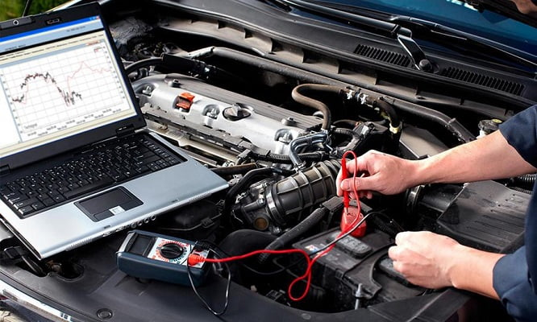

Diagnóstico Computarizado
Tecnología avanzada para un diagnóstico preciso y confiable

Diagnóstico con Tecnología de Punta
Utilizamos equipos de diagnóstico computarizado de última generación para identificar problemas en tu vehículo con precisión milimétrica. Nuestros scanners profesionales se conectan directamente al sistema de control del motor para leer y analizar datos en tiempo real.
Nuestro servicio incluye:
- Escaneo completo del sistema computarizado del vehículo
- Análisis detallado de códigos de error OBD-II
- Pruebas de sensores y actuadores en tiempo real
- Diagnóstico del sistema de inyección electrónica
- Verificación del sistema de transmisión automática
- Análisis del sistema de control de emisiones
- Pruebas de compresión y vacío del motor
- Diagnóstico de sistemas de seguridad (ABS, airbags)
- Lectura de datos en vivo del ECU
- Reporte detallado impreso del diagnóstico
Ventajas del diagnóstico computarizado:
⚡ Diagnóstico Rápido
Identificación precisa de problemas en minutos, no en horas.
🎯 Alta Precisión
Tecnología que elimina las conjeturas y ahorra tiempo.
🔮 Prevención
Detecta problemas potenciales antes de que se vuelvan costosos.
💵 Ahorro
Evita reparaciones innecesarias con diagnóstico certero.
¿Cuándo necesitas un diagnóstico?
🔴 Luz Check Engine
Cuando la luz de verificación del motor está encendida o parpadeando.
⚡ Pérdida de Potencia
Cuando el vehículo pierde potencia o tiene aceleración irregular.
💨 Consumo Excesivo
Cuando notas un aumento inusual en el consumo de combustible.
🔊 Ruidos Extraños
Cuando escuchas golpeteos, silbidos o ruidos anormales del motor.
Códigos de Error Comunes
P0300 - Fallas de Encendido
Causas comunes:
- Bujías en mal estado
- Bobinas de encendido defectuosas
- Inyectores sucios o dañados
- Problemas de compresión
P0420 - Catalizador
Causas comunes:
- Catalizador deteriorado
- Sensor de oxígeno defectuoso
- Fuga en el sistema de escape
- Problemas de combustión
P0171/P0174 - Mezcla Pobre
Causas comunes:
- Fuga de vacío en el sistema
- Sensor MAF sucio o dañado
- Filtro de combustible obstruido
- Bomba de combustible débil
P0401 - Sistema EGR
Causas comunes:
- Válvula EGR obstruida
- Sensor de posición EGR dañado
- Conductos de recirculación tapados
- Problemas eléctricos en el sistema
Preguntas Frecuentes sobre Diagnóstico
¿Cuánto tiempo toma un diagnóstico completo?
Un diagnóstico computarizado básico toma entre 30-60 minutos. Diagnósticos más complejos pueden requerir 1-2 horas dependiendo del problema y el modelo del vehículo.
¿El diagnóstico garantiza encontrar el problema?
Nuestro diagnóstico computarizado tiene una precisión del 95%. En casos raros, problemas intermitentes pueden requerir pruebas adicionales durante más tiempo.
¿Puedo borrar los códigos yo mismo?
Sí, pero no es recomendable. Borrar códigos sin reparar el problema hará que regresen. Además, se pierde información valiosa para el diagnóstico.
¿Todos los vehículos se pueden diagnosticar?
Todos los vehículos desde 1996 en adelante tienen puerto OBD-II estándar. Vehículos más antiguos requieren equipos especializados según la marca.
¿El diagnóstico incluye la reparación?
No, el diagnóstico identifica el problema. La reparación se cotiza por separado una vez identificada la falla. Te entregamos un reporte detallado.
¿Qué hago si la luz Check Engine parpadea?
Una luz parpadeante indica una falla grave que puede dañar el catalizador. Detén el vehículo de manera segura y solicita asistencia inmediatamente.
Sistemas que Diagnosticamos
🔧 Motor y Transmisión
- Sistema de inyección
- Sistema de encendido
- Control de transmisión
- Gestión del motor (ECU)
🛡️ Seguridad
- Sistema ABS
- Control de estabilidad (ESP)
- Airbags (SRS)
- Frenos de emergencia
🌿 Emisiones
- Catalizador
- Sensores de oxígeno
- Sistema EVAP
- Válvula EGR
⚡ Eléctrico
- Sistema de carga
- Red de módulos
- Sensores y actuadores
- Comunicación CAN
🌡️ Climatización
- Aire acondicionado
- Control de temperatura
- Sistema de calefacción
- Ventilación automática
🎛️ Confort
- Cierre centralizado
- Sistema de alarma
- Asientos eléctricos
- Control de crucero